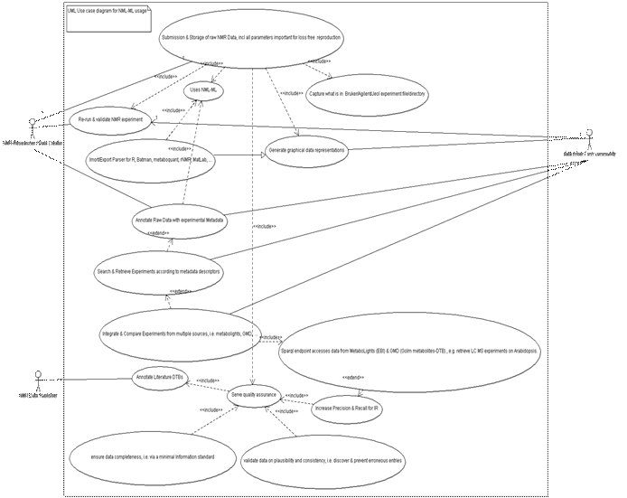
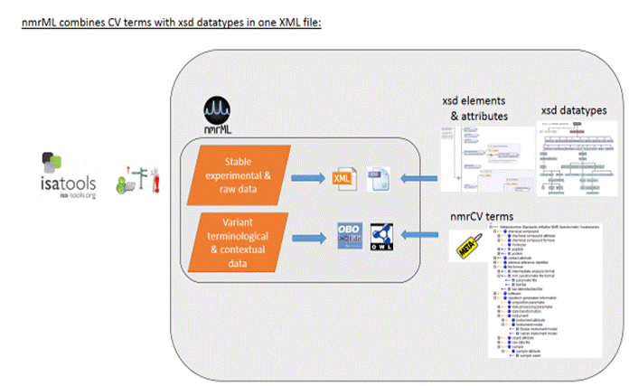
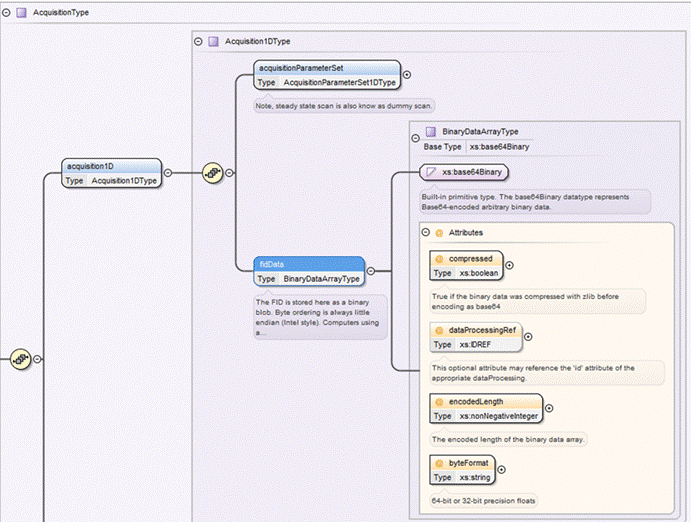
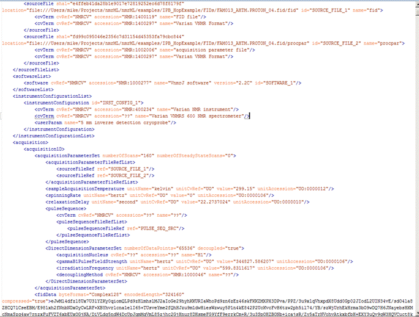

NMR-ML: Nuclear
Magnetic Resonance Spectrometry Markup Language
- nmrML Specification Document, Version
1.0 -
Status of This Document
This document presents the first
draft of a specification for the nmrML XML data format developed by the COSMOS
work package 2 Standards Development in approval of the Metabolomics
Standards Initiative (MSI). Its structure and wording was taken from an
existing specification of equal scope, namely the PSI mzML specification
available under http://www.psidev.info/mzml. Distribution is unlimited.
1. Abstract
The COSMOS EU project and the
Metabolomics Standards Initiative (MSI) defines community standards for data
representation in metabolomics to facilitate data comparison, exchange and
verification. The COSMOS WP2 develops standards for describing NMR experiment
data. This document presents information to the NMR community about the
modelling in XML of the experimental results obtained by NMR of metabolite
samples and biomolecular compounds. COSMOS WP2 here specifies the missing open standard called NMR Markup
Language (nmrML) for capturing and disseminating Nuclear Magnetic Resonance
spectroscopy data in metabolomics. This is urgently needed as long-term
archival format if metabolomic databases are to capture all the formats of
metabolomics data, as well as supporting developments in cheminformatics and
structural biology.
This XML format is inspired by the
PSI mzML format and hence consists of an XML Schema Definition (XSD) that is
accompanied by a controlled vocabulary (CV). The XSD defines the allowed XML
elements and attributes and their corresponding XML structure. The CV provides
the terminology to describe the data in detail and provide standardized values
for the XML tags.
This document assumes familiarity with a few data modelling notations, namely XML and XML Schema (www.w3.org/XML/Schema) for the XSD-based specification of the XML standard and controlled vocabularies in which terms are described in an is-a hierarchy called subsumption graph or taxonomy. You should know what xml elements are, that they can have attributes and that elements can be nested. You should know that a CV term usually has an ID (accession), a label, and potentially more metadata.
This document should be read in conjunction with a kit of auxiliary files, including the XSD and CV documentations as well as How-to tutorials for the example instance documents. All files related to this proposal are available for download at http://nmrml.org.
Contents
1. Abstract.................................................................................................................................. 1
2. Introduction........................................................................................................................... 3
2.1 Background.................................................................................................................... 3
2.2 Relationship to previous formats................................................................................ 6
2.3 Design Philosophy....................................................................................................... 6
Overall set-up............................................................................................................................ 7
Data validation by means of semantic validator software................................................. 8
Tool support and software
availability.................................................................................. 9
File versioning and release policy...................................................................................... 10
3. Implementation of the format........................................................................................... 10
3.1 The nmrML XSD.......................................................................................................... 10
The CV term referencing mechanism............................................................................ 11
Introduction to nmrML top level elements...................................................................... 12
Example implementations (valid nmrML.xml instances)................................................. 15
Selecting good example NMR data sets for nmrML xml instances........................... 15
3.2 Relationship to other efforts and specifications.................................................... 20
3.3 The NMR Controlled Vocabulary: nmrCV.............................................................. 22
Scope and coverage......................................................................................................... 22
Development history......................................................................................................... 22
Metadata provided with each CV term........................................................................... 23
External ontology term reference and import mechanism.......................................... 24
3.4 Resolved XSD design Issues................................................................................... 24
3.4.1 Count attributes.................................................................................................... 24
3.4.2 Numerical value and datetimestamp encoding.............................................. 24
The new CV term problem.................................................................................................. 25
Other supporting materials................................................................................................... 26
Source files and documentation......................................................................................... 26
Next steps................................................................................................................................ 27
3.5 How to contribute and provide feedback................................................................ 28
4. Conclusions....................................................................................................................... 28
5. Authors and Contributors................................................................................................. 28
6. Intellectual Property
Statement....................................................................................... 28
7. Appendix A......................................................................................................................... 29
2. Introduction
2.1 Background
Nuclear magnetic resonance (NMR) spectroscopy is an important analytical method in metabolomics. As the instrument vendors typically also provide the software to process the vendor specific data, alternative data analysis software needs to put considerable efforts into reading and writing these specific vendor formats. This applies both to commercial software such as NmrPipe, MestReNova (Mnova) or Chenomx NMR Suite, but even more so to community developed open source efforts such as Metaboquant[1] (Matlab-based), the Batman R package or rNMR. Currently existing standard data formats such as the JCAMP family[2] have several drawbacks, especially in metabolomics applications. One problem is that there is no semantic validation and error checking of JCAMP-DX files.
To continue the standardization efforts by the Metabolomics Standards Initiative (MSI) [3] and to leverage and canonize existing predecessor artifacts[4] and to coordinate further developments, the COSMOS EU project was granted to create an open exchange data standard to allow metabolomics NMR raw data, to be shared and stored in an agreed-upon stable and persistent, yet flexible, vendor agnostic and easy to understand XML format.
The COSMOS project coordinates efforts from multiple international groups who are working in NMR based metabolomics and NMR software-engineering to design and establish an nmrML data format (http://nmrml.org) based on the experience with the PSI (Proteomics Standards Initiative)[5] mzML[6] format for mass spectrometry.
A birds eye view on the envisioned nmrML use cases is provided in Fig. 1.

Figure 1: Illustration of NMR data management facilitation by means of the common nmrML standard developed in COSMOS
We have formalized these use cases and requirements which the new standard should meet in the Unified Modeling Language (UML) use case diagram (Fig. 2) to illustrate the distinct usages of nmrML in a more standardized manner.

Figure 2: UML use case diagram illustrating the multiple application scenarios of the nmrML standard
The following target objectives can be defined for the nmrML core format:
T1. The discovery of relevant results, so that, for example, data sets in a database or public repository that use a particular technique or combination of techniques can be identified and studied by experimentalists during experiment design or data analysis.
T2. The sharing of best practice, whereby, for example, approaches that have been successful at analysing low abundance analytes can be captured alongside the results produced.
T3. The evaluation of results, whereby, for example, the number and quality of the spectra recorded from a sample can be assessed in the light of the experimental conditions.
T4. The sharing of data sets in an open vendor agnostic manner, so that, for example, public repositories can import or export data, multi-site projects can share results to support integrated analysis, or meta-analyses can be performed by third parties from previously published data.
T5. The most comprehensive support of the instruments output, so that data can be captured [from] all relevant forms of NMR data representations.
T6. The increase of data persistence and traceability over time, by delivering a robust storage format. The primary focus of the model is to support long-term archiving and sharing, rather than day-to-day laboratory management, although the model is extensible to support context-specific details.
This document defines a specification and is not a tutorial. As such, the presentation of technical details is deliberately direct. The role of the text is to describe the schema model and justify design decisions made. This document does not provide comprehensive examples of the schema in use. Example documents are provided separately (see nmrml.org/examples) and should be examined in conjunction with this document. It is anticipated that tutorial material will be developed to aid implementation. Although the present specification document describes constraints and guidelines related to the content of an nmrML document as well as the availability of tools helping to read and write nmrML, it does not describe any implementation constraints or specifications such as coding language or operating system for software that will generate and/or read nmrML data.
2.2 Relationship to previous formats
Cosmos WP2 started the nmrML.xsd development by modification of a predecessor XSD[7] and with additional elements and structures from the BML-NMR XSD developed by Christian Ludwig and D. Rubtsov in Birmingham[8]. Both these efforts were integrated by COSMOS, expanding the schema of the TMIC Group, as it was already capturing the basic raw data and had the CV reference mechanism (see Tab 1) already in place. The merged successor artefact described in this document is now called nmrML and invalidates both predecessors as the MSI recommended common standard.
2.3 Design Philosophy
Since the
development of nmrML brought together many different philosophies, the
designers agreed on the following design principles:
- Keep the format simple. The data format should be easy for
developers to understand and integrate into software. This means that it
must be handled with off the shelve XML and ontology editors. Many
elaborate extensions were proposed but most were rejected in favour of a
simple implementation.
- Minimize alternate ways of encoding the same information. Such flexibility, while sometimes touted as a benefit, is bad for data formats.
- The data format should reference the original files for the sake of posterity and in the case where original vendor specific information is required.
- The data format should be flexible and allow for multiple use cases of NMR experiments.
- Build in some flexibility for encoding new important information but keep the format stable. There is a strong desire from companies that develop software for their customers to keep the data format stable over long periods of time.
- Allow 1D raw data and ultimately processed 2D NMR spectra to be shared in an open and vendor agnostic manner. Record enough information about an NMR spectrum acquisition to allow for further processing of the raw spectrum without referring to the original vendor files.
- Allow xml data files to be automatically validated on content correctness. For example minimum information standards like the MIBBI CIMIR[1] recommendation could be enforced, or a certain Publisher policy.
Overall set-up
As in our PSI mzML role-model, we agreed on implementing a combined exchange syntax using XML schema and accompanying controlled vocabulary (CV) terms (Fig. 3). The basics of XML and CV based data standardization have been summarized in a Powerpoint presentation[9] and highlight the general reasons for our nmrML setup.
In areas where the terminology is likely to change faster than the nmrML XSD could be updated and aligned, branching out from the XSD to CV usage can compensate for such dynamics in a more flexible way (read more on this issue in Sec 3.1). The CV can be maintained externally and even in a decentralized manner. For example, new NMR probe types can be represented in an nmrML file by requesting and adding a new controlled vocabulary term, without the need for a full XSD revision.

Figure. 3: nmrML consists of an XSD specification, capturing the more data-near and less variant raw data, and a CV in OWL format capturing the more variant contextual terminology on NMR as a simple taxonomy. For example when capturing information about the NMR instrument configuration there are many different possibilities such as probe heads, auto-samplers, brands, models, etc.
Data validation by means of semantic validator software
The XSD-CV set-up allows for multiple data validation levels to be established (Fig. 4), contributing to data consistency, completeness and overall quality assurance.
To avoid the problem of inconsistent
usage of vocabulary terms and the appearance of different dialects encoding the
same information, we are implementing a semantic validator that checks if the
CV terms are used correctly within a particular XML data file. Correctly
means that the terms are used in appropriate XML elements and in the correct
cardinality. So, the semantic validator enforces rules not only making sure
that the terms are actually found in a specified CV, but also that the correct
terms are used in the correct location (XML Tag) in the XML document and the
required terms are present the correct number of times, i.e. that there are two
filler values allowed for the SampleTemperature-Element, and that these must
come from the Unit Ontologies temperature unit subtree.
This allows greater flexibility in the schema, but enforces order in how the CV terms are used. This will require the discipline of using the semantic validator exploiting validation rules, not just an XML validator for checking an annotation prior to storage and submission. The result is that new technologies or information can be accommodated with adjustments to the controlled vocabulary and validator, not to the schema which hence can stay stable.

Fig. 4: XML syntax and structural validity of XML instances can be validated by an XML parser against the XML Schema. Examples include XML element and attribute positions, order and cardinality. Our proprietary validation tool exploits mapping files to enforce also semantic validity[10] of an xml file by specifying which CV terms are allowed in which elements, from which ontology they should come, as well as their order and cardinality. The semantic validator to be developed for the next deliverable checks that the criteria outlined by the mapping file are met in a given XML instance (.nmrML data file). The mapping file combined with the CV can also be used for intelligent support in data acquisition, i.e. when creating an interface that records NMR experiment information, it can populate a drop down menu or an autocomplete box with plausible CV terms that make sense in this particular place in the file.
Tool support and software availability
One of the aspects that will enable swift adoption is the timely availability of open source tools that implement the format (e.g. Batman, nNMR, pynmrML, ). With these tools many users are able to begin using the format immediately, without coding their own software. To insure that nmrML will be adopted quickly, the format is presented with several tools that write, read, and validate nmrML:
- Format converters and parser tools that translate the exchange syntax from vendor formats like Bruker and Varian to nmrML format.
- The nmrML semantic validator, which checks for correct implementation of nmrML files, i.e. with respect to CV term usage and cardinalities (to be released later).
- nmrML bindings for multiple programming languages (Java, Python, Ruby), as well as for widespread data analysis tools like the R statistics package.
File versioning and release policy
We are finalizing the release policy and hence refer to the corresponding wiki page draft at https://github.com/nmrML/nmrML/wiki/nmrML-release-process. We are working on automatizing the release procedure via a release script.
3. Implementation of the format
3.1 The nmrML XSD
Any valid nmrML XML instance must adhere to a specific structure or grammar, which is specified in an XML Schema Definition (XSD). The nmrML XSD is split up into multiple sections that organize the information that can appear in nmrML in an intuitive way that facilitates understanding of the format as well as tool development. The current top level structure of the nmrML XSD is described in Fig. 5.

Figure 5: The top level XML elements of the nmrML.xsd, illustrating its main elements and datatypes thereof. The CVList element defines the controlled vocabularies from which terms are drawn in an XML data file. The other elements are self-explanatory and refer to the actual NMR data description, a bit like sections in a material & methods paragraph, describing an NMR experiment. These are described below. For detailed documentation, we refer to the HTML documentation of the XSD, or the XSD itself, in which extensive element annotations explain the usage of the elements.
At certain locations in the XSD the user is allowed to describe his data by means of standardized controlled vocabulary terms. The XSD branches out into CV-usage, where:
· The terms are unstable, variant & dynamically evolving, or need to be changed and updated often
· The terms refer to fast paced dynamically changing terms such as software names/versions, processing parameters etc.
· The terms describe contextual metadata, rather than concrete NMR raw data, i.e. for cases where the terminology is already extensively defined in existing ontologies or CVs.
· The terms are better maintained by a fast reacting NMR user community rather than by resource-limited Cosmos work packages.
· The terms represent search attributes for data querying and large scale database-integration in an open linked data fashion.
· The terms should be accessible to rule-based or other reasoning techniques and validation
· The terms should be exploited by profiting from robust subsumption, e.g. exploiting the taxonomic CV backbone to generalize over query attributes and hence increase result recall and precision.
The CV term referencing mechanism
We here outline how CV term usage in nmrML is specified in the XSD. The requirement and modality for a CV term occurrence in an XML instance is specified in the XSD by reference elements/types as illustrated in Table 1. Keep in mind that the last element (UserParamType) captures free text and makes no CV reference to populate an xml element.
Table 1: The different ways to reference a CV term from within an nmrML xml file are listed.
|
Reference Type |
Definition |
Attributes |
Comment |
|
CVTermType |
Elements of this type hold additional data or annotation as a simple CV
term with no further values (Parameters) associated with it. Only controlled
CV terms are allowed here. |
CVRef (the ontology), accession (the
ID), name (the label) |
The CVRef attribute contains an id for the source CV, unique to the
XML instance, that is defined in the cvList element. This allows for multiple
CVs to be referenced crisp and unambiguously. The accession attribute
contains the ID of the CVterm which is unique within the CV. The name
attribute contains the term itself, the intelligible label which is e.g.
displayed it to a user) without requiring the CV file to be downloaded and
parsed. |
|
CVParamType |
Elements of this type hold additional data or annotation. In contrast
to CVTermType, here a pair of descriptors, i.e. the CV term AND a value
(=Parameter) is captured. Only controlled terms are allowed here. |
CVRef, accession, name, value |
The value attribute stores the parameter to be captured as value. |
|
CVParamWithUnitType |
Elements of this type hold additional data or annotation, i.e. a
controlled term describing a parameter, as well as a value and a description
of the unit the value is recorded in. Only controlled values are allowed
here. The unit ontology is typically used to provide the terms for the unit. |
CVRef, accession, name, value, unitCVRef,
unitAccession, unitName |
The unitCvRef, unitAccession and unitName attributes are used in
the same way to describe the unit as the cvRef, accession and name
terms are used to describe other CVTerms. |
|
ValueWithUnitType |
Elements of this type hold additional data or annotation. Only
controlled values are allowed here. For cases where only a Value with an
ontologically defined Unit should be given. Elements of this type hold a
value and a reference to the unit the value is recorded in, but is used in
locations where the type of value is already defined by the element, but the
unit of the value still needs to be recorded. |
Value, unitAccession, unitName, unitCvRef |
|
|
UserParamType |
Elements of this type hold uncontrolled user parameters (essentially
allowing free text). For cases where no suitable CV term exists. Before using
these, one should verify whether there is an appropriate CV term available,
and if so, use the CV term instead. This list can however later be exploited
to generate corresponding term requests in given ontologies or CVs. |
Name, valueType, value,
unitAccession, unitName, unitCvRef |
The valueType attribute |
References to the specific CVs used in the XML instance are recorded in the cvList element at the top of the file, which allows for unambiguous reference to CV terms.
Introduction to nmrML top level elements
The fileDescription element captures a general description about the file and its contents which allows for easy categorization of different types of nmrML instances e.g. 1D vs. 2D. The contactList element captures information that allows one to contact the original creators/corresponding authors of a file/paper in the case that further clarification is needed. The sourceFileList contains information about the original files used to make the nmrML instance including files that were required during the acquisition of the spectrum, for example a Varian processing parameter file or a source code file for a pulse program. Similarly the softwareList element captures references to software that was used during data acquisition and processing, and may include several different pieces of software. The informationConfigurationList element contains information about the configuration of an instrument beyond the acquisition parameters, for example the brand and model of the instrument. The acquisition element captures the processing parameters used during the acquisition. Since vendors have their own set of names for each of these parameters, we have standardized them with hopefully intuitive clear names. This element also contains the captured FID data. The spectrumList element contains one or more spectra in the frequency domain.

Figure 6: Specification of CV term
usage via the CVParam element in the XSD (Oxygen Design view screenshot). The
accession attribute encodes the CV term ID and the name encodes the CV term
(label).
An example of how a CV term reference by means of the CVParam type (specified in Fig 6) is used in an example XML instance data file can be found in Fig. 7.

Figure 7: Example XML instance (Oxygen grid view) for example data from the original J. Cruz XML example[11]. This figure illustrates instantiation of CV terms to describe a concrete file content via CV Parameters. Where the correct entity usage for some values was not given in the original file or doubtful, value entries were marked with the String "???".
The large binary FID data is stored in the xml at the end of the file in order to allow researchers/programs to look at the first part of the file, which contains the human readable data, without the need to load the whole binary blob.
At the core of XML Schema definitions lies a
principle called object inheritance. Like in object oriented programming
languages a complex but basic element can be defined in an abstract and general
way. This allows to derive subelements which inherit the already defined
characteristics of the parent-element, but can have additional characteristics.
The nmrML.xsd and data.nmrML XML files can be opened with any text editor and are human readable. Element descriptions were added as annotations to help rendering the schema self-explanatory and intuitive. To foster element retrieval and selection, we added a synonym field per XSD element (as we capture synonyms for the CV). These annotations are useful user entry points when searching for suitable annotations/elements.
Values and attributes for elements that appear in an nmrML
file can be
a) autogenerated
at run-time form the source vendor file parameters via a simple mapping that
the parser[2] accesses.
b) autogenerated
at parser run-time by computation from given parameters in the vendor data
files. An example is the value for gamma_b1_pulse_field_strength, which is
computed[3] from the varian pulse with
parameter.
c) autogenerated totally anew at parser run time. These refer to mainly administratory information, e.g. local variables like hashes and temporary IDs.
d) manually/user generated additional annotations that pertain to metadata that is not easily accessible or not available from the vendor files.
Example nmrML implementations (valid nmrML.xml instances)
We created three example xml files to serve as data-driven check on the format and allow end-users to grasp nmrmL more easily.
Selecting good example NMR data sets for nmrML xml instances
We defined the following characteristics of intelligible/intuitive example data set in order to increase didactic compliance:
· The data was gathered in a prototypical, abundant experiment set up, representative for metabolomics data acquisition
· The data should stem from a simple experimental set-up (e.g. 1D 1H NMR data)
· The data has a published paper available (not a method-, but a research-paper)
· The data has a database entry available, e.g. in MetaboLights[12] or HMDB[13]
· The data has accompanying original data files (FIDs)
· The data is using an abundant vendor format like Bruker, Varian or JEOL standard files
· The data is associated with a responsive contact person, in case someone needs to get back to the data producers to be able to gather additional information or resolve questions
· The data has been analyzed further with open source tools like Batman or MetaboQuant, so that we can later reproduce the same results based on the converted nmrML data.
According to these criteria we have collated example NMR raw data sets to be converted into nmrML by an automatic parser that reads in the vendor files and writes valid nmr xml files which comply to the nmrML.XSD. These examples .nmrML xml files can be found in the corresponding github example folder[4], together with an accompanying readme file illustrating its generation in more detail. To learn nmrML we advise our readers to look at these example files in the vendor format they are familiar with. Another place to look at examples are the documentation pages at nmrml.org/schema.
Example 1 (Cruz_Example): At first, we analyzed, if our schema compensated for all data required by the original predecessor. The original J. Cruz nmrML XML example was taken from http://www.metabolomicscentre.ca/nmrML/biosample-concentrations.xml and was translated manually into an nmrML XML instance.
Example 2 (reference_spectra_example): Another example was created from a reference spectrum obtained from HMDB (http://www.hmdb.ca/spectra/nmr_one_d/1024). The file was initially written manually, obtaining values from the Varian procpar file and a python script for encoding the raw FID data into the correct format. This example also proved useful for creating the conversion software since the output could be compared.
Example 3 (IPB_HOP_Example): We added another example which represents a typical metabolomics experimental set-up. Thirteen hop plant ecotypes were profiled for interesting secondary metabolites using MS and NMR in combination[14]. Fig. 7 illustrates how 1D acquisition and raw FID data is stored in an nmrML xml instance for one of the hop variants (AHTM). In order to familiarize with nmrML, this example is the one you should start with when you are working with Varian data.
After the development of the vendor to nmrML parsers was sufficiently complete, more example files were generated, i.e. from MetaboLights[5] entries MTBLS1 and 25 data. All examples can be browsed in the corresponding GitHub folder.
Example 4 (MTBLS1): This
is example nmrML file that was generated from Bruker data. If you are a Bruker user then this is your entry point to
familiarize with nmrML.


Figure 7: We here provide an nmrML XSD snippet where the FID element is shown (above). The code screenshot (below) illustrates how basic 1D acquisition parameters are stored in the example XML and how Varian raw FID data is stored. The FID is stored as a binary blob (base64 encoded binary data). Byte ordering is always Intel-style little endian. Computers using a different endian style must convert to/from little endian when writing/reading nmrML. The FID should be converted into an array of complex numbers before encoding.
3.2 Relationship to other efforts and specifications
The specification described in this document is not being developed in isolation; indeed, it is designed to be complementary to, and thus used in conjunction with several existing and emerging information models. Related specifications include the following:
1. nmrML parsers: We have implemented multiple parsers. The python based vendor2nmrML format parser[6] uses the nmrGlue API to access the most important parameters from the Bruker and Varian Files. Our Parser, developed by M Wilson them writes these parameters into an nmrML xml file. The nmrRIO parser parses nmrML and makes its content available to R based statistics tools such as Batman and rNMR.
2. nmrQuant: A future extension of the nmrML schema that allows to capture NMR based quantification data on metabolites
3. nmrIdent: An future extension of the nmrML schema that allows to capture NMR based Identification data on metabolites.
4. nmrML (to nmrCV) mapping file: Although the structure of the CV and the nmrML schema are related, the details of which CV terms are allowed/recommended at a given schema location is reported in an external mapping file. The mapping file is a list of associations between a cvParam element in the schema (described via XPath) and the allowed CV term entry nodes/branches of the CV terms expected in that location. The mapping file is read and interpreted by the semantic validator in order to check that the data annotation is consistent and complete. The mapping file needs to be checked and eventually updated when the CV terms or structure are changed. A mapping file will be provided in the next version of this document
5. BioSharing: http://www.biosharing.org is a consortium that collects and promotes common representations for Minimum Information Standards for Metabolomics. We will build on the BioSharing and the ISA-Tab efforts to harmonize representation of the metadata recommendations with other -omics communities, and use automated tests to ensure the interoperability of the metadata between the involved data producers, -consumers and -repositories.
6. CIMR (Core Information for Metabolomics Reporting) at http://mibbi.sourceforge.net/projects/CIMR.shtml specifies the minimal guidelines reporting metabolomics[15] work in a comprehensive and repeatable manner:
7. Minimum Information on an NMR experiment (MI NMR) as defined in http://link.springer.com/article/10.1007%2Fs11306-006-0040-4. The COSMOS nmrML format has been designed to encode the requirements specified in this MI NMR. However, nmrML does not enforce MI NMR compliance itself; nmrML documents may be valid and useful without being fully MI NMR compliant. The nmrML validator will have settings to validate either the basic nmrML raw data level or at a more comprehensive MI NMR compliant level, depending on the needs of the user.
8. SMRS (Standard Metabolic Reporting Structures): An Open Standard for Reporting Metabolic Data (http://www.smrsgroup.org).
9. Analytical Information Markup Language (AnIML):An emerging ASTM XML standard for analytical chemistry data. http://animl.sourceforge.net AniML captures the instrumental set-up of chemical analytical techniques, so is more general in scope than our NMR restricted effort.
10. mzML: http://www.psidev.info/mzml_1_0_0. The XML based open and PSI approved Mass Spectrometry data standard. This format served as a general role model for the development of nmrML and its success made us to copycat many of their design decisions.
11. ISA-Tab: http://isa-tools.org. As research in biomedical and life sciences is increasingly moving towards multi-omics studies, the Investigation/Study/Assay ISA-Tab format was developed to represent experimental metadata independently from the assay technology used. We will use ISA-Tab to standardize metabolomics reporting requirements and terminologies through customized ISA configurations.
3.3 The NMR Controlled Vocabulary: nmrCV
Scope and coverage
This controlled vocabulary (CV) is an MSI-approved ontology developed under COSMOS governance. This CV was derived from two predecessors (The NMR CV from the David Wishard Group, developed by Joseph Cruz) and the MSI NMR CV developed by Daniel Schober at the EBI. This simple taxonomy of terms[7] serves the nuclear magnetic resonance markup language (nmrML) with meaningful descriptors to amend the nmrML XML in an explicit yet standardized way. Metabolomics scientists are encouraged to use this CV to annotate their NMR raw and experimental context data.
The nmrCV is implemented as a simple taxonomy in owl syntax[8]. We choose the OWL Syntax[16] over the OBO format[17] as exchange syntax for the CV, as the OBO tools are less stable. Because the OBO format is only established in the biology domain (lack of off-the-shelf development tools) and there are hence less resources to integrate with.
The nmrCV is accessible at http://nmrml.org/cv, but soon will be available from ontology libraries such as the NCBO Bioportal[18]. More extensive documentation will be available form the website soon.
Development history
After agreement on the set up of development tools (Protégé 4), we formulated our CV design principles, namely agreed on file names, format syntax, namespaces, (auto) term ID schemes, a term obsoletion policy, as well as versioning & release procedures. We analyzed existing CVs on suitability and modelling errors[19]. From the given predecessor CVs, we proceeded in a bottom-up and middle-out approach to expand the CV. We first added CV terms as required in the XSD leafs, i.e. where CVTermType, CVParamType, CVParamWithUnitType references occur in XSD elements. After this, we continued with a use-case driven term population, taking multiple data sets as examples. No high throughput term-additions were attempted in the early design phase, as this would clutter the CV with terms of doubtful need, impair orientation in the term tree as too many terms distract us from getting the main structure right. The nmrCV.owl ontology momentarily contains ~ 600 classes under the nmr: namespace. Around 2000 terms are imported from the Unit Ontology and the BFO top level ontology.
Metadata provided with each CV term
Not all of our terms currently have natural language definitions, as these are time-intensive and not needed for our use case, given the terms are usually self-explanatory. None has deeper provenance data explicitly annotated (there is only an implicit indication from which predecessor CV a term came in the ID ranges). We try to avoid getting stuck in the meta-ether, and have been pragmatic about this.
The CV in its current stage is far from being complete. Its coverage is just sufficient to express the example raw data. We rely on our users that code their own NMR data in nmrML to submit request-emails for missing nmr CV terms to the nmrML mailing list[9].
The nmrCV should be dynamically maintained via the COSMOS nmrML mailing list (https://groups.google.com/forum/?hl=en#!forum/nmrml/join ) to allow any user to request new terms in agreement with the community involved. Once a consensus is reached among the community the new terms are added within few days. If there is no obvious consensus, the CV coordinators should vote and make a decision.
If you require us to integrate a whole list of new nmr CV terms, you can do so in an email to the author. In this case a term batch-submission table should have the following fields:
term name
(rdfs:label)skos:prefLabel,ideally adhering to labelling best practice[20].
term definition in natural
language (IAO_0000115)àskos:definition
superclass (ideally
a term from the current nmrCV.owl, or an own suggestion)
Optional fields (good to have) are:
synonym
(oboInOwl:hasExactSynonym)skos:altLabel
term definition
source (dc:source)
dc:creatordc:author
example
of usage (skos:example)
External ontology term reference and import mechanism
We use owl:import statements to import the BFO top level and the unit ontology into the nmrCV. Although this option tends to clutter the core CV with seldomly used terms and occupies a lot of RAM, it retains all metadata for the imported terms. We might at some point use the MIREOT term import mechanism, i.e. to reference Chebi terms for the description of Atoms, chemicals and small molecules.
3.4 Resolved XSD design Issues
There were several issues regarding the design of the format that were not clear cut, and a design choice was made that was not completely agreeable to everyone. So that these issues do not keep coming up, we document here the issues and why the decision that is implemented was made.
3.4.1 Count attributes
At the moment all list elements would have a count attribute. The reason is that parsers implemented in languages where memory allocation or array sizing is important, it is a nice performance enhancement to have a count attribute indicating how many elements there are in the list. As this is an easy target for creating inconsistent files (i.e. specifying a count=5 attribute followed by 6 items in the list), this was deemed to be not very useful. That is where we diverge from our role model the PSI mzML not using count attributes in the next versions.
3.4.2 Numerical value and datetimestamp encoding
All numerical values shall appear in the XML schema datatype specification (http://www.w3.org/TR/xmlschema-2/). The number 1/10 must always appear as 0.10 and never as 0,10. A preceeding + before a number (+5.0) is prohibited.
Datetimestamps must also be encoded as in the XML specification such as 2007-06-27T15:23:45.00035.
All id attributes follow the XML schema datatype xs:ID (http://www.w3.org/TR/xmlschema-2/#ID), which means that no two id attributes may be the same within a document, and id attributes must be purely alphanumerical strings with at least one letter. Thus they may not contain spaces or underscores, and id attributes may not be a plain number.
The new CV term problem
Whereas we allow the users to specify CV terms and CV term with unit and value combinations along the term reference modalities described in Table 1, all information encoded as element attributes are never controlled vocabulary terms. Thus, as an example to describe spectrum type, the cvParam element must be provided to specify a term below NMR:1002007 NMR spectrum, such as:
<cvParam cvLabel="nmrCV" accession=" NMR:1000118" name="J-resolved spectrum" value=""/>
Note that both accession and the term name are provided. Parsers should focus on the accession number as this should never change, even if the term name is adjusted in the controlled vocabulary later. Note that there is no value. The mere presence of the term is the annotation.
The problem comes when there is a new term to be added. Lets assume that it becomes necessary to add a new spectrum type heteronuclear J-resolved spectrum. Vendor X would like to start writing nmrML with this spectrum type. What should happen and what could also happen?
In an ideal world, Vendor X would contact the Cosmos standards development Work package 2 nmrML list and request a new child term of J-resolved spectrum. A CV coordinator would verify that this is a new concept, not simply a synonym of an existing concept, add the term to the CV and release a new version of the nmrCV.owl file at the same location. Vendor X would obtain the accession number and could begin writing out valid nmrML. The semantic validator would (and already does) automatically download the new .owl file and validates that the new nmrML is semantically valid using the new term. If the file is then distributed to arbitrary site Y, local software will suddenly encounter this new term:
<cvParam cvLabel="MS" accession=" NMR:1000129 " name=" heteronuclear J-resolved spectrum" value=""/>
and there is the possibility of failure. The first problem that may occur is that reader software may try to understand what the spectrum type is, but it will not find a spectrum type that it understands. Therefore it can only conclude that either no spectrum type was provided, or one of the terms it doesnt recognize is a spectrum type but it wont know which one. If the software could connect to the Internet, and could automatically download the latest .obo file, and look to see if this term was in the file, and then determine what parent the above term had, and understand that the parent is NMR spectrum, then the software could conclude that the above cv term is an NMR spectrum, but a new one that it doesnt not know how to handle yet. Such a string of logic is not terribly difficult but it is not trivial and is objectionable to some.
Worse yet, Vendor X could have been lazy and not even contacted the nmrML CV coordinators and just started publishing nmrML with (option A):
<cvParam cvLabel="nmrCV" accession="NMR:9999999" name=" heteronuclear J-resolved spectrum" value=""/>
There is no way to resolve this. No reader could possibly know how to handle this. It should be avoided at all cost. Although it should be noted that until the proper accession number is furnished, such an approach could at least initially be used. In any case, processing software may still not know how to properly handle heteronuclear J-resolved spectra, but it should already be able to confidently understand what the spectrum type is and admit it cannot handle it.
Other supporting materials
This
document cannot be fully judged on its own. It is important to study the
accompanying power point presentations, sample instance documents, controlled
vocabulary, schema files, and the software that implements this pre-release
version of nmrML.
Source files and documentation
All these files and programs are available from nmrml.org. Further development versions with accompanying readme files can be found on the nmrML GitHub site (https://github.com/nmrML/nmrML).
The following describes the more important files and documents that we have prepared and their respective download locations:
nmrML.xsd
(nmrml.org/schema/1.0.rc1/nmrML.xsd): An XML schema that defines the structure, content and parts of the semantics of the allowed nmrML XML documents. The XML schema definition (XSD) uses XML Schema version 1.1 format following the W3C recommendation (w3.org/XML/Schema). The schema allows for the capture of raw NMR spectrum data and acquisition parameters for both one-dimensional and two-dimensional spectra, including two-dimensional J-resolved spectra.
nmrCV.owl
(nmrml.org/cv/1.0.rc1/nmrCV.owl): The controlled vocabulary (CV) describing the more variant terminology in an unambiguous and standardized way. This ontology is the MSI-sanctioned successor of artifacts developed previously at EMBL-EBI, Hinxton, UK (D. Schober, Sansone Group) and the Wishart Research Group, Edmonton, Canada (J. Cruz). This CV currently covers the description of NMR spectrum acquisition set up and raw data generated during the acquisition. There is less coverage of data generated by analysis of the spectrum such as metabolite quantification and identification. The CV terms are used within the nmrML xml file, at positions specified in the XSD, e.g. by CVParam references.
XML example files
(https://github.com/nmrML/nmrML/tree/master/examples/working.tmp/nmrML & https://github.com/nmrML/nmrML/tree/master/examples): Multiple XML instances complying with the XSD were generated to illustrate the usage of nmrML in a practical experiment data annotation. These instances also served to test the XSD and CV on coverage, structural soundness and to test parser software.
XSDToCV mapping file
(nmrml.org/schema/1.0.rc1/nmrml-mapping.xml): This xml file specifies rules to constrain CV term usage during data entry, i.e. it allows to verify validness of CV term usage in the nmrML XML files. This mapping file will also be used to enforce minimal metadata standards[21]. Only a very first draft has been created for testing purposes.
HTML documentation files
(nmrml.org/schema/1.0.rc1/doc & nmrml.org/cv/1.0.rc1/doc): Documentation was generated with automated tools that describes the nmrML XSD and the CV OWL. The documentation allows non-XML and non-ontology savvy end-users to open, browse and comment on the standards as well as facilitating the use of the data format by developers and the implementation of tools that use, read or write nmrML.
All source files are available on the project Github pages, together with an accompanying readme file.
GitHub: https://github.com/nmrML/nmrML
Cosmos website: http://www.cosmos-fp7.eu
nmrML website: http://nmrml.org
nmrML wiki: http://cosmos-fp7.eu/nmrML/
nmrML google forum: https://groups.google.com/forum/#!forum/nmrml
Next steps
Further testing of the XSD is required with diverse experimental configurations, to ensure that our goal of flexibility has been achieved. Continuing to improve the documentation and building a community of users will hopefully provide further feedback for improvements to the Schema and CV. At the same time we will continue the data-driven CV expansions and add new terms according to the additional examples selected by our different partners. We must also ensure that the schema is compatible with the steps we are taking toward NMR QuantML and IdentML, which pose the next layer in our onion approach to expand the nmrML (from raw data to preprocessed data to post processed data to full spectra, and their ident and Quant annotations).
Also we need to work out an evaluation pipeline. As part of the next deliverable (D2.5 - Real data, Converters, Validators and Parsers for NMR-ML, m24), we will implement the CV-aware validator software and extensive mapping files containing the verification rules to check XML instances on semantic errors and completeness.
In parallel we will implement the parsers for format conversions and I/O to open source tools. The creation of ISA Tab specifications for easy tabular data entry and minimal reporting requirement enforcement is considered a further next step (D2.6).
3.5 How to contribute and provide feedback
Remarks, change and expansion requests on the nmrML.xsd and nmrCV should be send to the COSMOS nmrML mailing list at https://groups.google.com/forum/?hl=en#!forum/nmrml/join
Alternatively, the nmrML Git issue tracker can be used. Here use a CV:-prefix in the issues subject-line to render issues easy findable. For XSD requests it should be XSD: (the default), DP for design principle, FC: for format and conversions)
Feedback on the documentation can be send to
Daniel Schober (Cosmos WP2 Lead on nmrML) at dschober@ipb-halle.de
Concrete questions on the XSD should be sent to Michael Wilson at michael.wilson@ualberta.ca
4. Conclusions
This document contains the specifications for using the nmrML format to represent NMR spectrometry raw data and associated contextual metadata. This specification, in conjunction with the nmrML XML Schema and nmrCV constitutes the proposed Metabolomics Standards Initiative sanctioned NMR exchange data coordinated by the COSMOS EU project.
5. Authors and Contributors
Daniel Schober,
Mike Wilson, Steffen Neumann for Cosmos WP 2
We acknowledge the following people, who contributed to the model or controlled vocabulary development and gave feedback or tested nmrML:
Reza Salek, Mike Wilson, Steffen Neumann, Christian Ludwig, Ulrich Günter, Catherine Deborde, Daniel Joseph, Antonio Rosato, John Easton, Tim Ebbels, Kenneth Haug, Annick Moing, Luis de Figueiredo, Matthias Klein, Philippe Rocca Serra, Jie Hao, Andrea Porzel
6. Intellectual Property Statement
COSMOS and MSI take no position regarding the validity or scope of any intellectual property or other rights that might be claimed to pertain to the implementation or use of the technology described in this document or the extent to which any license under such rights might or might not be available; neither does it represent that it has made any effort to identify any such rights. Copies of claims of rights made available for publication and any assurances of licenses to be made available, or the result of an attempt made to obtain a general license or permission for the use of such proprietary rights by implementers or users of this specification can be obtained from the MSI/PSI Chair.
COSMOS and MSI invite any interested party to bring to its attention any copyrights, patents or patent applications, or other proprietary rights, which may cover technology that may be required to practice this recommendation. Please address the information to the main author.
7. Appendix A
Copyright (C) Cosmos and the Metabolomics Standards Initiative (2013). All Rights Reserved.
This document and translations of it may be copied and furnished to others, and derivative works that comment on or otherwise explain it or assist in its implementation, may be prepared, copied, published and distributed, in whole or in part, without restriction of any kind, provided that the above copyright notice and this paragraph are included on all such copies and derivative works.
This document and the information contained herein is provided on an "AS IS" basis and THE METABOLOMICS STANDARDS INITIATIVE AND COSMOS DEVELOPERS DISCLAIM ALL WARRANTIES, EXPRESSED OR IMPLIED, INCLUDING BUT NOT LIMITED TO ANY WARRANTY THAT THE USE OF THE INFORMATION HEREIN WILL NOT INFRINGE ANY RIGHTS OR ANY IMPLIED WARRANTIES OF MERCHANTABILITY OR FITNESS FOR A PARTICULAR PURPOSE.
References